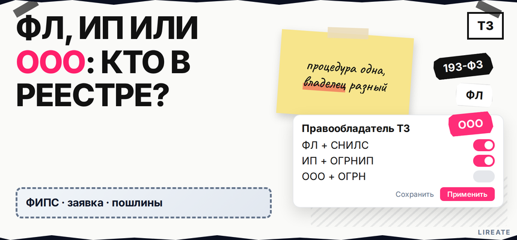

Вы выбрали название для товаров, а в анкете Роспатента просят указать заявителя: гражданин, ИП или ООО? От того, на кого оформлен правообладатель (тот, кто вписан в свидетельство), зависят риски при закрытии ИП, ликвидации компании, продаже бренда и работе на маркетплейсе. Ниже по схеме вы сравните физлицо, ИП и ООО, выберете статус заявителя и поймёте, когда подавать заявку по отдельному гайду, а когда готовить отчуждение в реестре.

TL;DR / Быстрый инсайт: Экспертиза, пошлины и сроки одинаковы для всех заявителей; меняются только реквизиты в заявке и правила после регистрации. С 29.06.2023 (федеральный закон 193-ФЗ) гражданин без ИП может быть правообладателем. Минимум госпошлин на новую заявку в один класс - 35 000 ₽ (пп. 2.1, 2.4, 2.11); передача знака в ООО - отчуждение с пошлиной 15 000 ₽ (п. 3.11) или лицензия с учётом п. 3.10. Самозанятый подаёт заявку как гражданин с СНИЛС.
Для предпринимателя, самозанятого или учредителя, который решает вопрос до оплаты пошлин. Нормы сверены с FAQ Роспатента и таблицей пошлин на 12.11.2026; налоги и сделки - с вашим бухгалтером.
Регистрация товарного знака на физическое лицо идёт теми же стадиями, что для ИП и ООО: экспертиза, пошлины, свидетельство на 10 лет (ст. 1491). Отличаются не сроки, а реквизиты в реестре и то, кому вы потом отчуждаете или лицензируете знак. Подача описана в госуслуге Роспатента; из обязательного на этапе выбора - только строка "заявитель".
Делайте: выбрать владельца до сборки документов. Не делайте: регистрировать на ООО "про запас", если компании ещё нет.
Маршрут решения:
Проверка обозначения → выбор заявителя (ФЛ / ИП / ООО) → подача заявки → свидетельство → при необходимости лицензия или отчуждение
С 29.06.2023 (193-ФЗ) заявитель по п. 1 ст. 1492 - юрлицо или гражданин (FAQ Роспатента). Самозанятый подаёт как гражданин (СНИЛС); ИП - с ОГРНИП; ООО - с ОГРН.
Делайте: сверить статус на дату подачи, а не на дату открытия бизнеса два года назад. Не делайте: отказываться от регистрации на себя из-за мифа "только для ИП" - после 193-ФЗ это не аргумент.
| Критерий | Гражданин (ФЛ / самозанятый) | ИП | ООО |
|---|---|---|---|
| Реквизиты в заявке | ФИО, СНИЛС | ФИО, ОГРНИП | Наименование, ОГРН |
| Минимум пошлин на новую заявку (1 класс) | 35 000 ₽: 4 000 + 13 000 + 18 000 (пп. 2.1, 2.4, 2.11 таблицы Роспатента) | ||
| Контроль бренда лично | Прямой: вы в свидетельстве | То же лицо, но в реестре - ИП | Бренд - актив компании |
| Закрытие ИП / ликвидация | После 193-ФЗ закрытие ИП не повод досрочно гасить знак по п. 4 п. 1 ст. 1514; знак остаётся у гражданина | См. колонку ФЛ после снятия с учёта | Ликвидация ООО без правопреемника - риск прекращения по ст. 1514 |
| ООО использует знак | Нужна лицензия или отчуждение на ООО | Аналогично, если владелец - вы как ФЛ/ИП | ООО - правообладатель, договор с собой не нужен |
| Маркетплейс | Имя в реестре = вы; договор с площадкой не подменяет свидетельство | Часто совпадает с продавцом ИП | Удобно при корпоративных договорах; согласуйте с карточкой |
| Передача инвестору / M&A | Отчуждение или лицензия; коммерческим ООО "даром" не упростить без НПА | Как у ФЛ | Знак уже на балансе НМА (спросите бухгалтера) |
Делайте: пройтись по строкам таблицы и отметить свой сценарий через три года. Не делайте: выбирать ООО только ради "солидности", если один учредитель и план - продать личный бренд отдельно от компании.
При сходстве с чужим знаком сначала - план при занятом ТЗ, потом выбор заявителя.
Ответ на "товарный знак на физлицо или ИП" зависит от того, кто пользуется брендом и кому его продадите.
Делайте: зафиксировать сценарий письменно. Не делайте: менять заявителя в поданной заявке без оценки юриста.
Проверьте обозначение в Поисковой платформе. Сопровождение подачи - на регистрации товарного знака Лирейт.
По ст. 1514 знак могут прекратить, если ликвидируют ООО без правопреемника или гражданин умер без наследников. Знак наследуется; закрытие ИП после 193-ФЗ само по себе знак не гасит.
Делайте: до ликвидации ООО продать или отчудить ТЗ. Не делайте: три года не использовать знак на ФЛ - риск по ст. 1486.
Частый запрос: "передача знака с физлица на компанию". Это не повторная заявка с тем же обозначением, а сделка с уже зарегистрированным правом. Два инструмента:
Детали - в гайде по отчуждению. Между коммерческими ООО "даром" по ст. 1234 обычно не проходит.
Итоговый вердикт: временно ведёте продажи через ООО, а бренд личный - начните с лицензии. Продаёте компанию с брендом "внутри" - оформите отчуждение на ООО до due diligence.
Делайте: заложить в бюджет отдельно 35 000 ₽ на регистрацию и при необходимости ещё 15 000 ₽ на запись сделки. Не делайте: подавать вторую заявку "на то же имя" вместо отчуждения - это лишние пошлины и риск отказа по сходству с вашим же знаком.
Расчёт пошлин, проверка обозначения и представительство в Роспатенте - на странице регистрации товарного знака Лирейт.
Материал проверен: эксперт Елена Ковалева (главный эксперт по SEO/GEO), редакция Лирейт.
Достоверность данных: 193-ФЗ, ст. 1514 и таблица пошлин сверены на 12.11.2026.
Да. Гражданин подаёт заявку с СНИЛС (FAQ Роспатента). Самозанятый идёт как гражданин.
Пошлины и сроки те же; в заявке - ОГРНИП или СНИЛС. После закрытия ИП знак остаётся у вас, если не отчуждали.
После 193-ФЗ закрытие ИП не гасит знак по ст. 1514. Обновите использование в классах МКТУ.
На продавца в реестре и в договоре с площадкой. Иначе - лицензия или отчуждение до масштабирования продаж.
Договор отчуждения, регистрация в Роспатент, пошлина п. 3.11 (15 000 ₽). Шаги - в гайде по отчуждению.
Да. Без лицензии или отчуждения использование ООО - риск по ст. 1484.
Для заявки хватит гражданина с СНИЛС; ИП - вопрос налогов и договоров, не Роспатента.